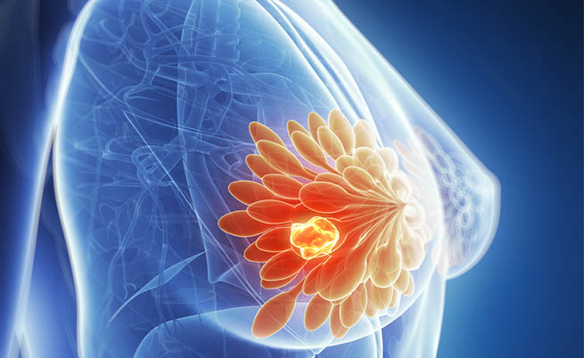
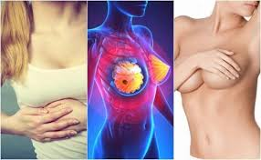

IL TUMORE AL SENO
Cos'è?
Il seno è costituito da un insieme di ghiandole e tessuto adiposo ed è posto tra la pelle e la parete del torace.
Questo insieme di strutture ghiandolari sono chiamate lobuli, un lobo è un insieme di lobuli. In un seno vi sono da 15 a 20 lobi.
Il tumore al seno è una malattia potenzialmente grave se non è individuata e curata per tempo. È dovuto alla moltiplicazione incontrollata di alcune cellule della ghiandola mammaria che si trasformano in cellule maligne.
Ciò significa che hanno la capacitá di staccarsi dal tessuto che le ha generate per invadere i tessuti circostanti e, col tempo, anche gli altri organi del corpo facendoli con il tempo soffocare. In teoria si possono formare tumori da tutti i tipi di tessuti del seno, ma i piú frequenti nascono dalle cellule ghiandolari (dai lobuli) o da quelle che formano la parete dei dotti.


Tipologie di tumore
Sono due i tipi di cancro del seno: le forme non invasive e quelle invasive.
Le forme non invasive sono le seguenti:
DIN: neoplasia duttale intraepiteliale (carcinoma in situ)
Grado 1A (DIN 1A) = atipia epiteliale piatta (secondo alcuni studi recenti questa forma dovrebbe essere considerata precancerosa e non un vero e proprio tumore)
Grado 1B (DIN 1B) = iperplasia duttale atipica
Grado 1C (DIN 1C) = neoplasia duttale intraepiteliale ben differenziato (grado 1)
Grado 2 (DIN 2) = neoplasia duttale intraepiteliale moderatamente differenziato (grado 2)
Grado 3 (DIN 3) = neoplasia duttale intraepiteliale scarsamente differenziato (grado 3)
LIN: neoplasia lobulare intraepiteliale
LIN 1 neoplasia lobulare intraepiteliale grado 1
LIN 2 neoplasia lobulare intraepiteliale grado 2
LIN 3 neoplasia lobulare intraepiteliale in situ
Le forme invasive sono:
il carcinoma duttale: si chiama così quando supera la parete del dotto. Rappresenta tra il 70 e l'80 per cento di tutte le forme di cancro del seno.
il carcinoma lobulare: si chiama così quando il tumore supera la parete del lobulo. Rappresenta il 10-15 per cento di tutti i cancri del seno. Può colpire contemporaneamente ambedue i seni o comparire in piú punti nello stesso seno.
Altre forme di carcinoma meno frequenti sono il carcinoma tubulare, papillare, mucinoso, cribriforme. Hanno prognosi favorevole.